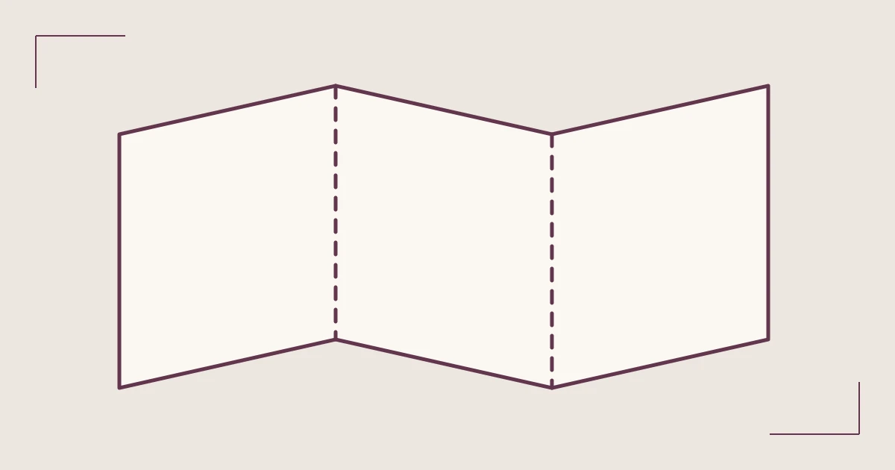

%%A9_EYEBROW%%
%%A9_TITLE%%
%%A9_SUMMARY%%- 撰写
- %%AUTHOR_NAME%%
- 发布
- 复核

%%A9_TOC_LABEL%%
%%A9_H2_1%%
%%A9_BODY_1_A%%
- %%A9_FOLD_TITLE_1%%
- %%A9_FOLD_1_TEXT_1%%
- %%A9_FOLD_1_TEXT_2%%
- %%A9_FOLD_TITLE_2%%
- %%A9_FOLD_2_TEXT_1%%
- %%A9_FOLD_2_TEXT_2%%
- %%A9_FOLD_TITLE_3%%
- %%A9_FOLD_3_TEXT_1%%
- %%A9_FOLD_3_TEXT_2%%
%%A9_BODY_1_B%%
%%A9_H2_2%%
%%A9_BODY_2_A%%
%%A9_PULL_QUOTE%%
%%A9_BODY_2_B%%
%%A9_H2_3%%
%%A9_BODY_3_A%%
- %%A9_POINT_1%%
- %%A9_POINT_2%%
- %%A9_POINT_3%%
%%A9_BODY_3_B%%
%%A9_H2_4%%
%%A9_BODY_4_A%%
%%A9_BODY_4_B%%
%%A9_FAQ_TITLE%%
%%A9_FAQ_Q_1%%
%%A9_FAQ_A_1%%
%%A9_FAQ_Q_2%%
%%A9_FAQ_A_2%%
%%A9_FAQ_Q_3%%
%%A9_FAQ_A_3%%